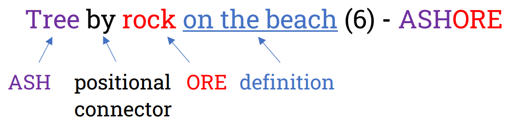

Charades
A charade constructs the solution from smaller pieces (elements), like how you might mime out a word syllable by syllable in the party game of the same name.
This idea of combining different pieces is essential in most cryptic clues.

Charades can have connector words that describe how the elements of the charade are linked together.
Above, for example, ASH is placed "by" ORE to create ASHORE.
Sometimes, words that look like connectors will actually be charade elements themselves. For example:

Here, Juliet is J from the NATO (phonetic) alphabet. Kiss is X because a kiss can be represented as an X in writing. The word "in" is not an indicator or a connector in this clue — instead, it appears as itself within the solution!
Charades are often combined with the operations presented in the next two sections. Homophones, letter selection, and anagrams can also be used as charade elements.